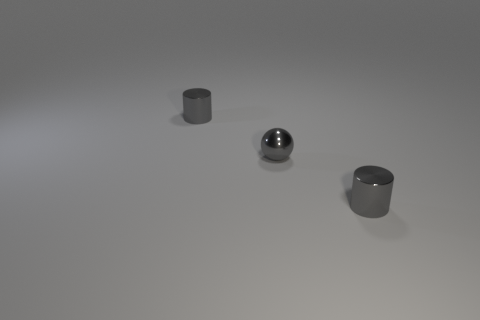
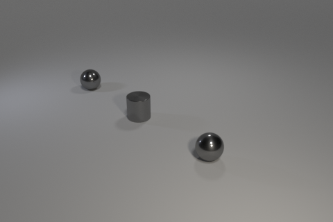

Train:
Candidates: 0, 1, 2
Intended concept: For each cylinder there is a sphere in front of it (on its right diagonal).
Solution provided by tool:
Our tool chose candidate 0.
The discriminator given was: Exists q0: cylinder!0. Forall q1: sphere!1. And(right!1!0 left!0!1)
The neural baseline model chose candidate 2